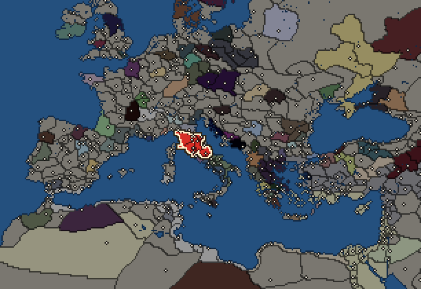

Rome


- difficulty Easy
- Roman culture
- believes
 Italic
Italic - 6 settlements
- capital Arretium
- 24,050 manpower
- 8 characters
- 21 faction units
- 439 regional units
The campaign brief
"They make a desert and call it peace." – Calgacus
The history of Rome began with a she-wolf. She brought up the twin boys Romulus and Remus, of whom the first went on to found the city of Rome in 753 BC and kill his brother. These were the early seeds of violence in the story of a city that was allegedly populated by the descendants of Troy. In its early days, Rome fell under the influence of the Etruscan League and developed into a royal society. However, at some point before the halfway point of the first millennium BC, the people of Rome decided that enough was enough and expelled their last king, Tarquinius Superbus.
The fifth century saw the first period of military expansion, including successful wars against their Latin neighbours, who also laid the earliest foundation for the famous system of Roman allies in Italy. Those years also witnessed the rise of the adjacent town of Veii as Rome's most formidable foe. It took the Romans decades of war and frustration to finally win a decisive victory over Veii in 396 BC, which resulted in the Roman occupation of the town. But Fortuna was not all that gracious nine years later, when ferocious tribes from the lands of the Celts entered Central Italy and met the Romans in battle. At this meeting on the river Allia, the Roman army was emphatically crushed, and the survivors had to run to the safe haven of Veii. Following on to that remarkable defeat, according to legend, a little group of heroes - with a helping honk from the sacred geese, which raised the alarm - saved the besieged capital after most people had fled the town. But the Romans had learned from their mistakes and erected the impressive Servian Walls, which still form the main defence of the city now in 270 BC.
With Rome fortified and the Celts retreating back into the northern plains, the Republic underwent crucial changes both internally and externally. The common plebs, which already held the positions of the tribunes, also got their first consul in 366 and gained exclusive access for the election of the censors in 339 BC. At the same time, Rome finally conquered all of Latium and went on to challenge the Samnites, a people from the mountainous terrain of Central Italy eastwards from Rome. The armies of Rome advanced steadily over these years, but their cunning foes eventually lured them into a deadly trap. But against all expectations, the Romans, encircled and defeated, were set free by the Samnite victors. While the Samnites hoped this would end the hostilities, the Romans felt it was an unbelievable act of humiliation. From that point on, both sides fought until the bitter end. In the third and final war (298-290 BC), it was Rome who won dominance over Central Italy. Just three years later, the Plebs also won a victory to bring the struggle of the orders - the internal strife that had plagued the nascent republic - to an end.
Rome's greatest test, however, was yet to come. In the 476th year after the foundation of the city, King Pyrrhus of the Molossians landed in Italy to wage war on the Romans. He had been called by Tarentum to aid the Greeks in their fight against Roman expansion and arrived with the reputation of a brave warrior and skilled commander. At Heraclea, he smashed the consular armies and incited panic among the ranks of the common soldiers, not least out of fear of the strange beasts called elephants he had brought with him over the strait of Hydruntum. But the Roman accepted this formidable challenge and received the support of Mars, the God of War, to eventually defeat Pyrrhus in a glorious battle and drive him back to Greece.
It is now, in the year 485 ab urbe condita, that we look back on these events. Rome has established its dominance over Central and Southern Italy, establishing a formidable and ever-expanding system of subservient allies bound to the Republic. The expansion into the central Mediterranean, however, has been observed with sceptical eyes in Carthage, the great commercial metropolis of Northern Africa. Roman imperial ambitions might eventually carry her into war against this former ally. Meanwhile, in the North, the Celtic tribes still pose a considerable threat, and every Roman can tell horror stories about these wild and brutal people. But Roman weapons have proved their worth time and again, and slowly new reforms are starting to improve the citizen legions' lethal effectivity even more. Once again, Rome's fate lies on the shoulders of the common men...
Starting settlements
Rome begins with 6 settlements and 24,050 manpower.
| Settlement | Region | Size | Manpower | Already built | Settlement | Region | Size | Manpower | Already built |
|---|---|---|---|---|---|---|---|---|---|
| Arretium (capital) | Etruria | city | 6,500 | 14 buildings | Iguvium | Umbria | large town | 4,250 | 10 buildings |
| Corfinium | Paelignia | town | 3,500 | 3 buildings | Falerii | Faliscia | large town | 2,800 | 11 buildings |
| Volsinii | Velzna | large town | 5,200 | 10 buildings | Sena Gallica | Ager Gallicus | town | 1,800 | 6 buildings |
What is already built in each settlement
Arretium, in Etruria: Treasury, Large Colony, Governor's Palace, Small Stone Wall, Direct Rule, Region Information Scroll, Paved Roads, Local Market, Shipwright, Pottery Kiln (Urban), Basin Irrigation (Crops), Blacksmith (Industry), Barracks and Armoury, Sewers (Sanitation)
Iguvium, in Umbria: Governor's Villa, Wooden Palisade, Homeland, Region Information Scroll, Roads, Local Barter, Olive Grove (Rural), Highland Pasturing (Husbandry), Training Grounds, Cisterns (Sanitation)
Corfinium, in Paelignia: Governor's House, Dependency, Region Information Scroll
Falerii, in Faliscia: Governor's Villa, Wooden Palisade, Dependency, Cisterns (Sanitation), Region Information Scroll, Roads, Local Market, Slash and Burn (Crops), Shrine, Pottery Kiln (Urban), Training Grounds
Volsinii, in Velzna: Governor's Villa, Wooden Palisade, Dependency, Region Information Scroll, Roads, Irrigation Ditches (Crops), Local Barter, Basic Armoury, Shrine, Grape Orchards (Rural)
Sena Gallica, in Ager Gallicus: Small Colony, Governor's House, Direct Rule, Region Information Scroll, Local Barter, Trade Port
Starting diplomacy
Protectorates (1):  Volsinii
Volsinii
Allied with (2):  Massalia ·
Massalia ·  Roman Senate
Roman Senate
Trade agreements with (3):  Massalia ·
Massalia ·  Roman Senate ·
Roman Senate ·  Volsinii
Volsinii
At peace with every other faction.
Like every faction, it is also at war with the  Free Peoples, who hold every settlement no faction does.
Free Peoples, who hold every settlement no faction does.
Starting characters
| Name | Role | Age | Name | Role | Age | Name | Role | Age | Name | Role | Age |
|---|---|---|---|---|---|---|---|---|---|---|---|
| Gnaeus Cornelius Blasio | General | 43 | Gaius Fabius Pictor | General | 42 | Decimus Iunius Brutus | General | 28 | Marcus Atilius Regulus | General | 37 |
| Lucius Caecilius Metellus | General | 20 | Aulus Gabinius | General | 32 | Larth Hescana | General | 46 | Publius Sempronius Sophus | General | 41 |
Reforms
- A New Man: Gaius Marius (switched off)
- Polybian Reform
- The Gracchan Reforms
- The War of the Allies
- The Late Republican Reforms
- Named Legions are now available
For every faction: Military innovations have arrived!, Second wave of military innovations have arrived!.
Faction mechanics
From the game's own guide. See also the other game guides.
Military reforms
Rome has one reform.
Roman reforms requirements: Own 1 huge city in Italy.
Unlocks: The Legions!
Units you can recruit
The same as in the main campaign.